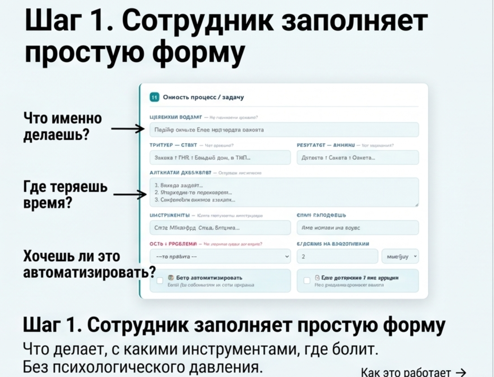
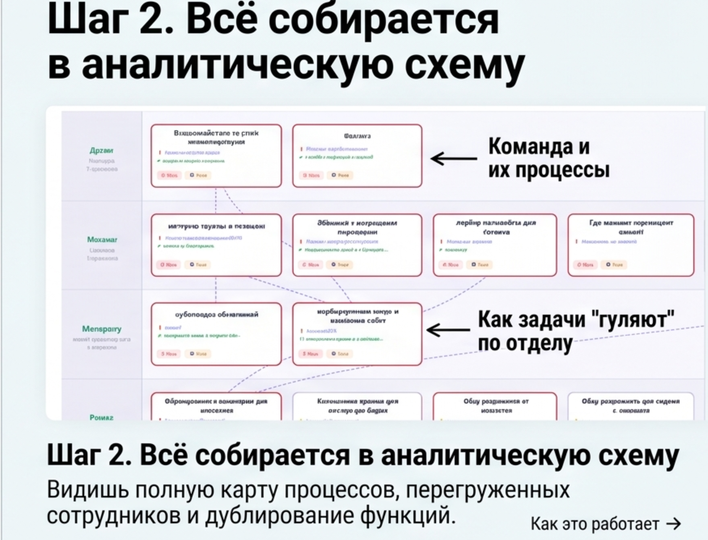
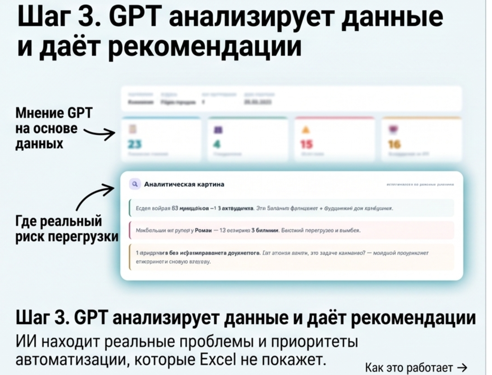
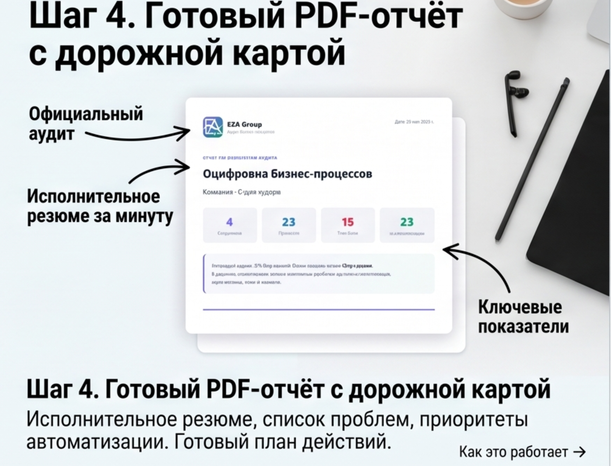

Без интервью и таблиц. Каждый сотрудник тратит 20 минут — вы получаете полную карту процессов и конкретный план автоматизации.
Почему это важно
Вы не знаете точно, сколько времени уходит на конкретный процесс и кто является узким местом в команде.
Если ключевой сотрудник уходит — процессы рассыпаются. Вы не знаете кто и что знает только он один.
Кто-то уже использует ChatGPT, кто-то нет. Нет системы — нет результата. Непонятно с чего начать автоматизацию.
Процесс
Минимум времени от команды, максимум данных для вас.
Что делает, с какими инструментами, где болит. Без психологического давления — каждый описывает свои задачи за 15–20 минут в удобное время.
15–20 мин · без вашего участия
Видите полную карту процессов, перегруженных сотрудников и дублирование функций. Как задачи «гуляют» по отделу — на одном экране.
Автоматически · в реальном времени
ИИ находит реальные проблемы и приоритеты автоматизации, которые Excel не покажет. Мнение GPT основано на данных, а не ощущениях.
ИИ-анализ · 5–7 дней
Исполнительное резюме, список проблем, приоритеты автоматизации. Готовый план действий — что внедрять первым и почему.
Финальная встреча + документ
Что вы получаете
Каждый процесс, каждый сотрудник. Swimlane-диаграмма с потоками передач и точками коммуникации между отделами.
Сотрудники, на которых держится критичный процесс и которых нечем заменить. Риск для бизнеса виден явно.
ИИ-скоринг каждого процесса: потенциал автоматизации, частота, боль сотрудников. Список от «сделать первым» до «пока не трогать».
Документ, который можно показать совету директоров или инвесторам. Все выводы подкреплены данными от сотрудников.
Реальный кейс
Хронические простои, брак, конфликты между цехом и офисом. Руководство не понимало где именно рвётся цепочка.
Проблема: процессы передачи между сменами нигде не были зафиксированы — каждый делал по-своему
Что выявил аудит: 3 «призрака» — сотрудники с уникальными знаниями, которые нигде не задокументированы
Решение: жёсткие регламенты передачи + ICF-работа с сопротивлением персонала
Результат: −40% простоев и брака за 3 месяца после внедрения регламентов
Частые вопросы
Следующий шаг
Расскажите о команде и текущей ситуации — предложим формат аудита и стоимость.
→ 30 минут · бесплатно · без обязательств